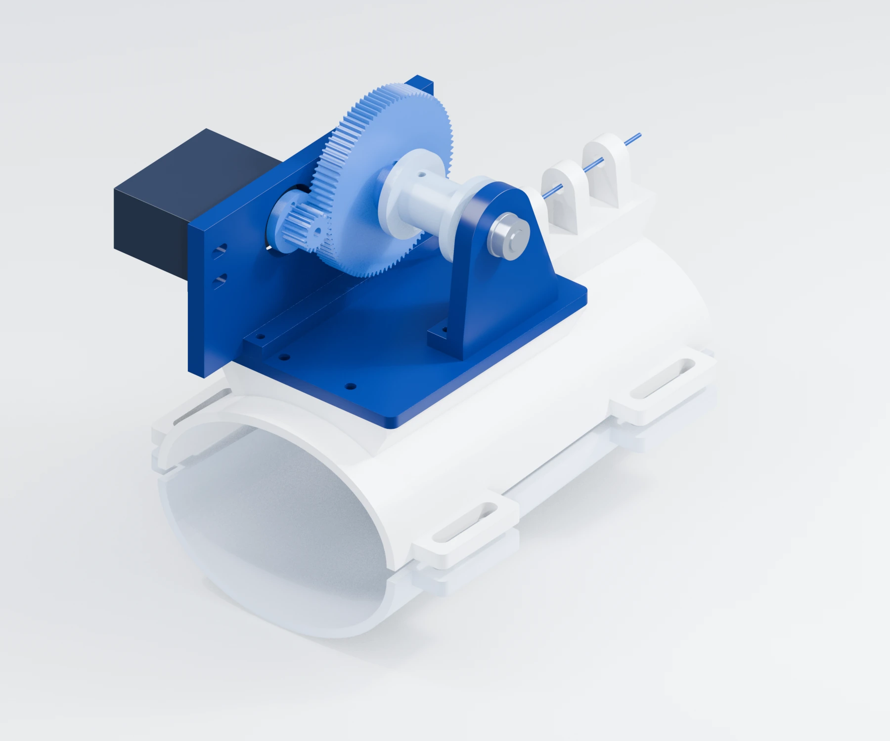
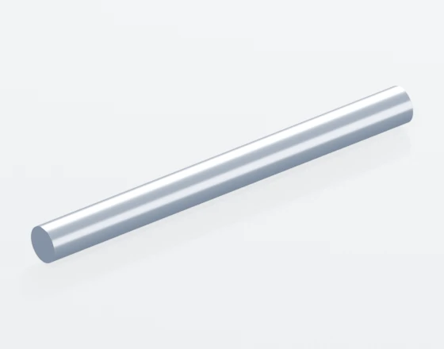
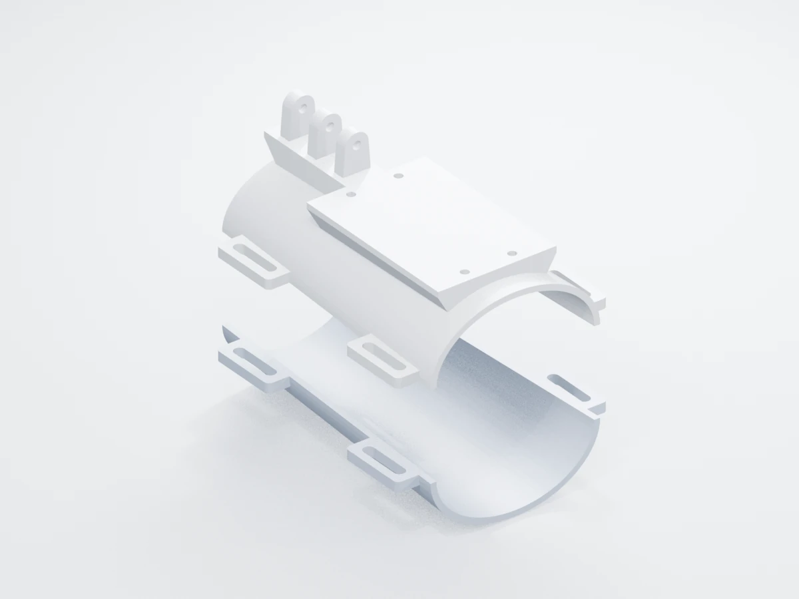
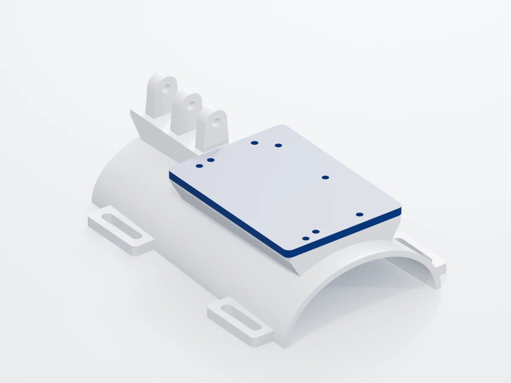
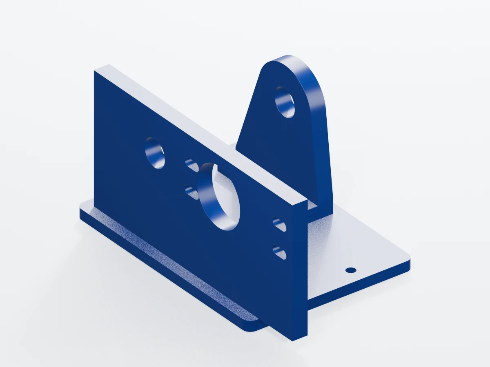
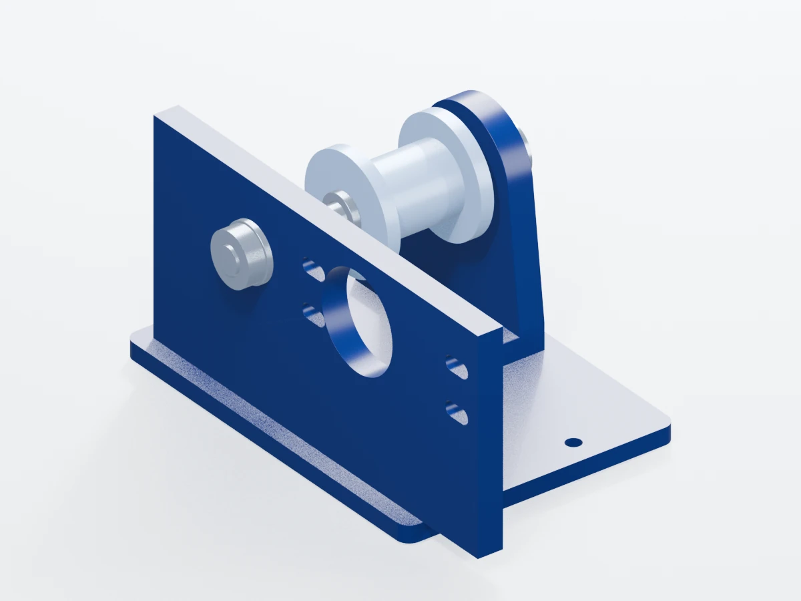
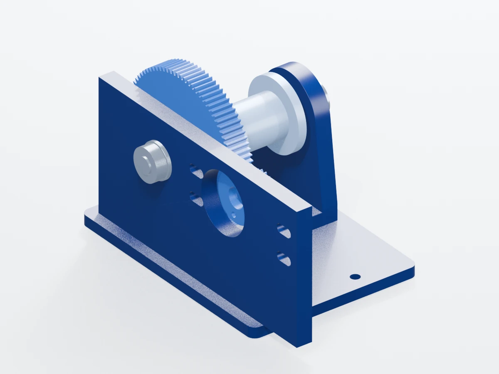
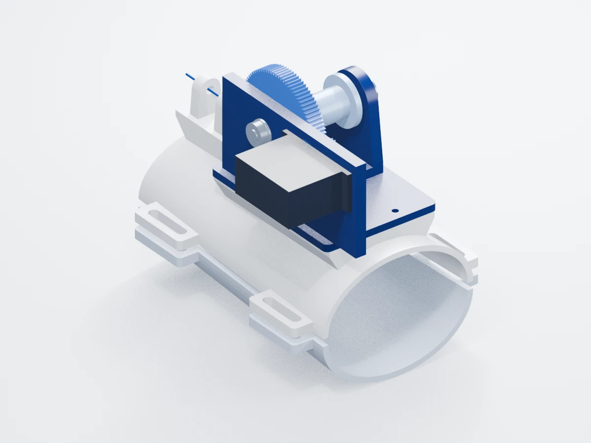
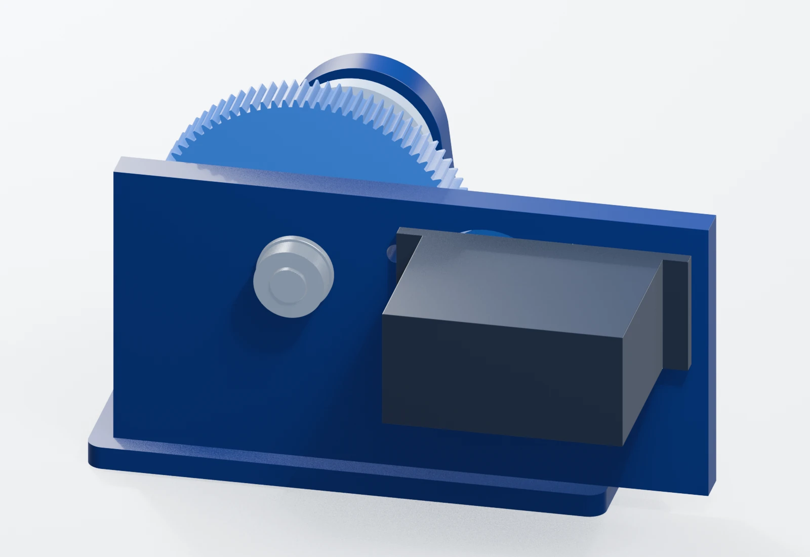

Что подготовить
- FS5113R со штатной качалкой1 шт.
- Металлический вал Ø6 × 68 мм1 шт.
- Ремни шириной 20–25 мм2 шт.
- Винты M3, вставки, стопорные винтыпо месту
- Трос и гладкие направляющие вкладышипо месту
Две створки, съёмная кассета привода и тросовая передача. От устройства механизма до печати и сборки.

Визуализации построены по CAD-моделям из комплекта.
Механика для проверки компоновки и посадок. Испытания с приводом требуют отдельного стенда; использование на человеке не предусмотрено.
Выберите узел, чтобы рассмотреть его в 3D. На изображениях — реальные детали сборки.
13 уникальных STL, 16 экземпляров с учётом повторяющихся деталей. Пробный печатный вал заменяется металлическим для нагрузки.

Перед полной печатью проверьте в слайсере ориентацию, локальные поддержки и зазоры. Сначала напечатайте пробные посадки под вал, втулки, вставки и штатную качалку. Размеры сервопривода и длины винтов сверяйте по реальным комплектующим.
Сначала сухая примерка и ручная проверка. Питание отключено, трос без натяжения.






FS5113R вращает ведущую шестерню. Ведомое колесо и катушка находятся на общем валу.

Понижающая передача уменьшает скорость вращения и увеличивает момент с учётом потерь. Реверс сервопривода меняет направление намотки.
i = 90 / 18 = 550,3 мм — расчёт по диаметру сердцевины без толщины троса. Реальная намотка зависит от диаметра троса и числа слоёв. FS5113R непрерывного вращения сам по себе не измеряет угол катушки или силу натяжения.
Цифровая геометрия и физические испытания — отдельные этапы. Здесь приведены результаты проверки экспортированных файлов.
Каждая сетка состоит из одного связного тела, имеет согласованные нормали и положительный объём. В выбранных сечениях зубьев не обнаружено пересечений в 81 положении.
Открыть отчёт проверкиЭто механический стендовый прототип. Защитный кожух, независимый ограничитель натяжения, измерение силы и положения, аварийное расцепление в V01 не реализованы. Испытания на человеке не проводились и не предусмотрены этим комплектом.
Модели в миллиметрах. Печатайте отдельные STL; GLB предназначен для просмотра сборки.
13 STL, обе GLB-сборки, параметрическая модель OpenSCAD, скрипт экспорта, спецификация и инструкция.